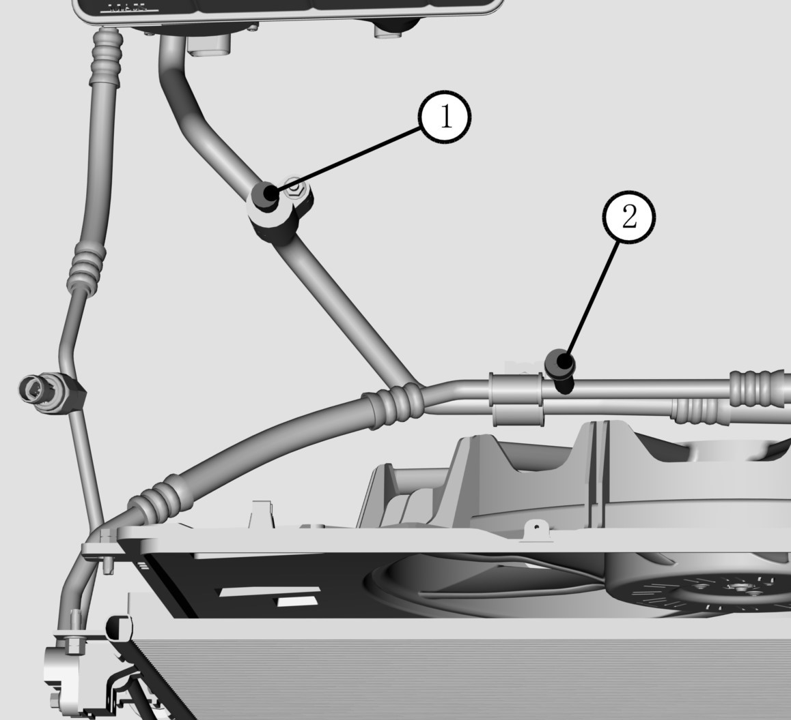

常用工具和维修设备：制冷剂回收加注机，一次连接就能完成空调系统排放、排空和重新加注程序。回收和排空期间都要过滤制冷剂，以保证向空调系统加注的制冷剂清洁、干燥。
应在通风良好的环境中进行制冷剂相关作业，不要吸入制冷剂蒸汽。应避免吸入空调制冷剂 134a (四氟代乙烷 )和润滑油蒸气或雾。接触它们后会刺激眼睛、鼻子和咽部。应在通风良好的区域内作业。从空调系统中清除 R-134a时，应使用经认证的满足 SAE(美国汽车工程师协会 )J 2210要求的维修设备 (R-134a再生设备 )。如果系统发生意外排放，在继续维修前，必须对工作区通风。其它有关健康和安全的信息，可从制冷剂和润滑油制造商处获得。
回收制冷剂
1.关闭所有用电器，关闭启动开关。
2.断开蓄电池负极线束。
3.接通电源设备。
4.连接制冷回路高、低压管路。
5.打开设备低压阀开关①和高压阀开关②。
6.选择设备“制冷剂回收”选项，启动设备，开始回收工作。
7.查看设备低压表压力值，当压力表达到-34kPa真空度时，关闭设备，停止回收。
空调系统抽真空
1.连接制冷回路高、低压管路。
2.打开设备高压阀门②，选择“抽真空”选项，设定时间为15分钟。启动设备抽真空，时间达到设定值时，设备自动停止工作。
3.关闭高压阀门②，查看低压表压力值。
4.若压力值达到设定值，没有重新升高，则确认制冷回路没有泄露，可以进行压缩机润滑油与制冷剂的添加。
5.若压力上升，则检查制冷回路是否泄露。

加注制冷剂
请按照下列标准加注制冷剂。
|
制冷剂型号 |
制冷剂加注量 |
|
R134a |
续航405KM车型780±20g，续航505KM车型450±20g |
加注制冷剂，应在补充空调压缩机润滑油之后进行。
1. 连接制冷回路高、低压管
2. 选择设备“制冷剂补充”选项，调整加注量。
3. 打开低压阀开关，启动设备进行加注。
4. 观察设备显示屏，当加注量达到设定值时，屏幕显示加注完成。
5. 关闭阀门。
6. 若设备显示加注速度过慢，请参考下列加注方式：
断开制冷回路高压接头，只连接低压端。
关闭设备高低压阀门。
将汽车设置到驻车档，启动车辆，打开空调，设定为低温模式。
打开设备低压阀门，制冷剂将从低压端注入制冷管路中。
当压力表显示达到低压标准值后，断开低压端接头。
制冷剂加注完成。